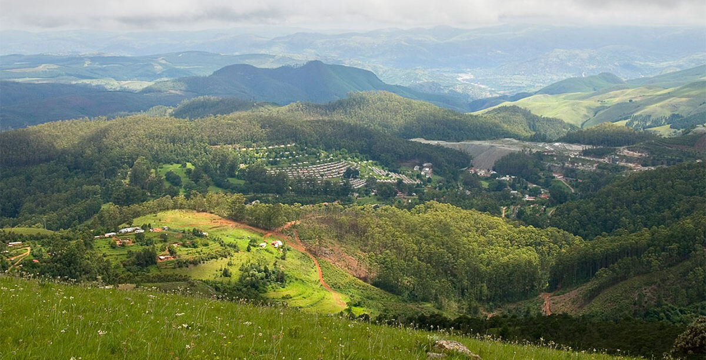
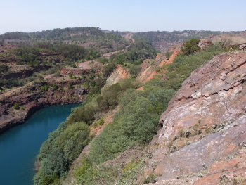

North West Eswatini
The North West region of Eswatini (Swaziland) lies predominantly in the highveld, with beautiful landscape of dramatic rolling uplands. Impressive hills and winding river valleys form the east, topped by the country’s two highest peaks – Emlembe (1,862m) and Ngwenya (1,829m).


North West Eswatini
Among the Hhohho region’s attractions are the stunning Malolotja Nature Reserve, Eswatini’s greatest wilderness and with its ancient mine and glass factory.